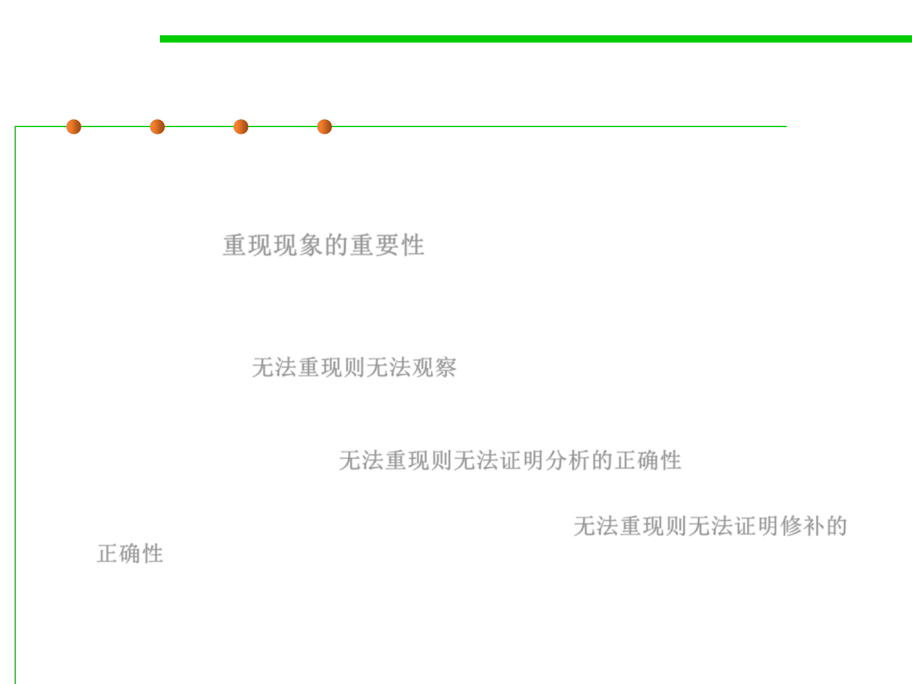

Reproduce
7.4 Debugging
▪ Why is reproducing the problem so important? Because if you
can’t, then it’s almost impossible to make progress.
▪ Specifically: 重现现象的重要性
– The empirical process relies upon our ability to watch the software
executing in the presence of the bug. If we can’t get the software to
misbehave in the first place, then this, the most powerful weapon in our
armory, is lost. 无法重现则无法观察
– Even if you do somehow manage to come up with a theory about why the
software might be misbehaving, how are you going to prove it if you can’t
reproduce the problem?无法重现则无法证明分析的正确性
– If you think that you’ve implemented a fix, how are you going to
demonstrate that it really does fix the problem?无法重现则无法证明修补的
正确性